How to Allow Microphone Usage in OYOclass Apps
We have added the ability to use Speech-to-Text within AI-enabled apps inside OYOclass. In order for this function to work, our pages will need access to a microphone connected to your device. Each web browser will be slightly different in this regard, but all will follow the same pattern the first time using the Speech-to-Text feature.
Enabling Microphone Permissions
The first time trying to use Speech-to-Text, the app will pop open a window requesting to enable access to your computer's microphone. Click Enable Access in this window:
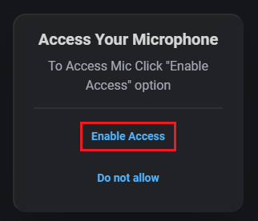
After you click that, a small window on your browser should pop up prompting you for microphone access while using this feature. Simply click "Allow" on this button and your microphone should be working, try it out!
Example in the Chrome web browser:
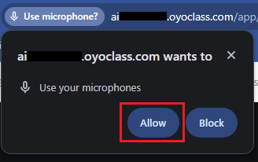
Help! Microphone Permission is Denied
If you accidentally clicked deny when asked, or your browser is rejecting permission requests by default, you will see the following window within the app:
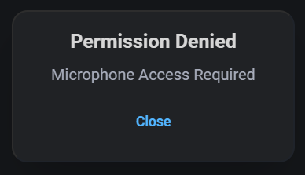
To fix this issue, we will need to go into the browser's settings and change it manually. The process for doing this varies from browser to browser, but all follow the same basic flow.
Chrome
There is a small button to the left of the current web address at the top of your web browser, next to the refresh button. It looks like two horizontal switches. If you click this you can access the current page's permissions and change them directly here:
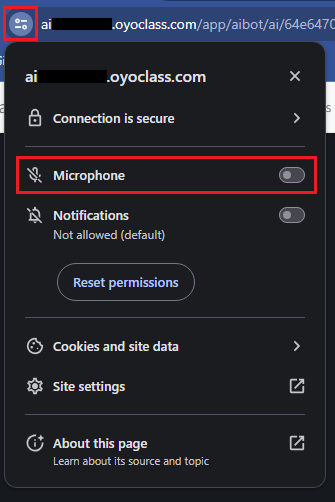
Firefox
There is a small set of icons to the left of the current web address at the top of your web browser, to the right of the lock icon. It looks like two horizontal switches and a microphone. If you click this you can access the current page's permissions and remove the blocked permission from this list:
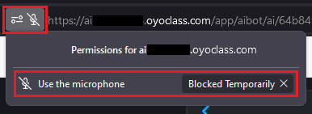
Afterwards, you can refresh the page to try to enable the microphone permission again from the beginning.
Brave
There is a small button to the left of the current web address at the top of your web browser, next to the bookmark button. It looks like two horizontal switches. If you click this you can access the current page's permissions and change them directly here:
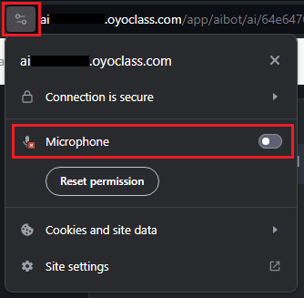
Edge
There is a small lock icon to the left of the current web address at the top of your web browser, next to the refresh button. If you click this you can access the current page's permissions and change them directly here:
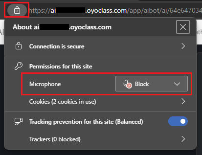
A second option is to click on the microphone icon on the right side of your address bar, and change the setting there:
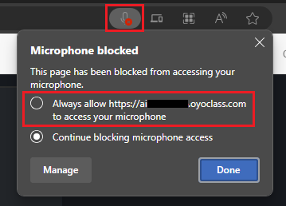
Safari
While on the page you want to use the microphone on, click on the Safari tab on the top left of your screen, then select "Settings for ai########.oyoclass.com ..." from the dropdown:
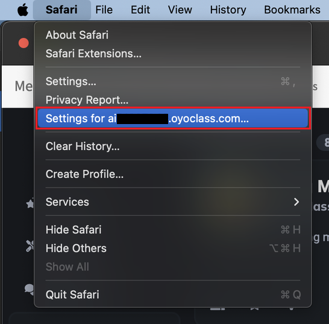
Then in the next window that appears, you can change the microphone permission away from Deny with the microphone permission's dropdown:
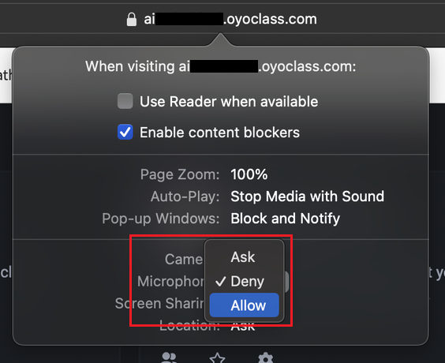
Opera
There is a small lock icon to the left of the current web address at the top of your web browser, to the right of the VPN button. If you click this you can access the current page's permissions and change them directly here:
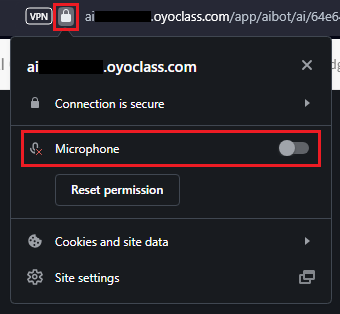
Alternatively, if you just recently denied the permission, a small microphone icon to the left of the current web address may be visible at the top of your web browser. It appears between the refresh and VPN buttons. If you click this you can access the current page's microphone permission and clear it directly here:
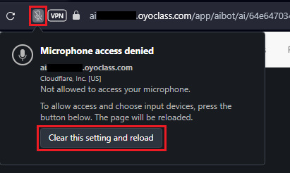